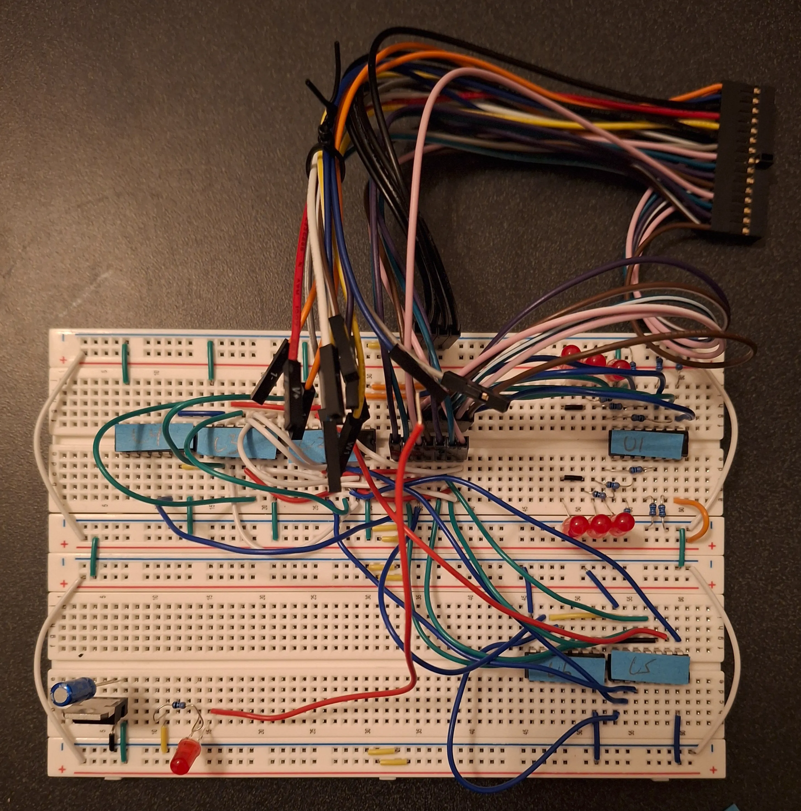
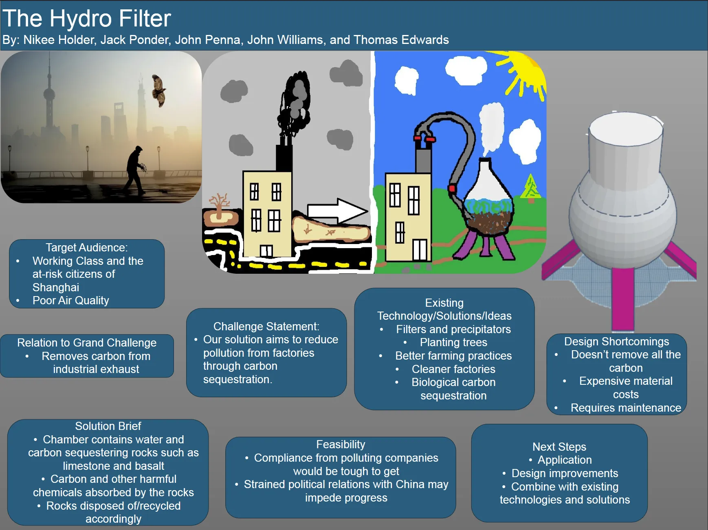
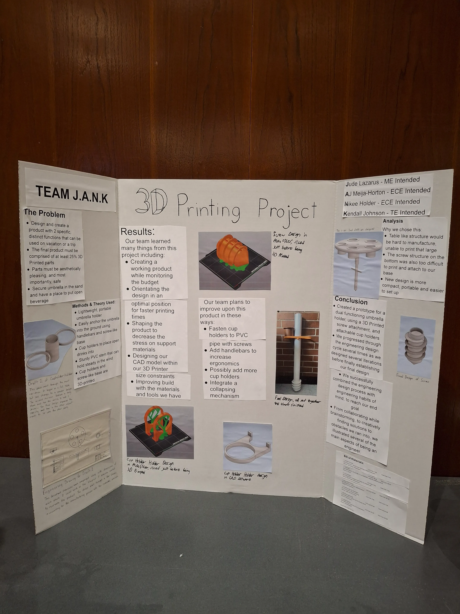
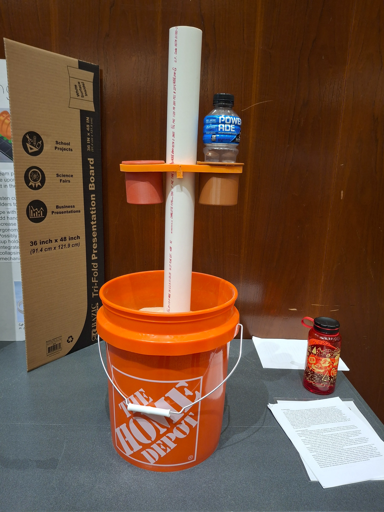
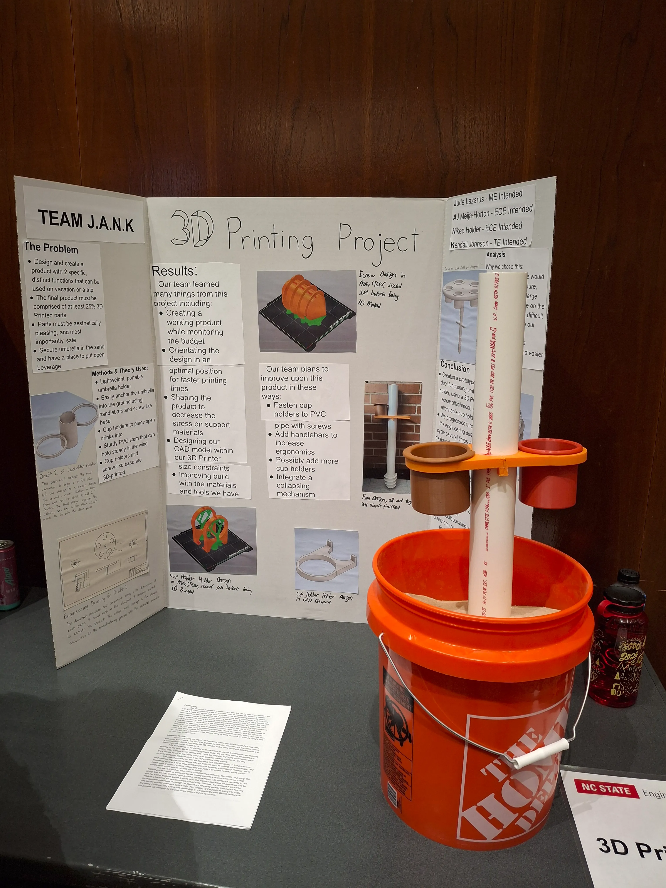
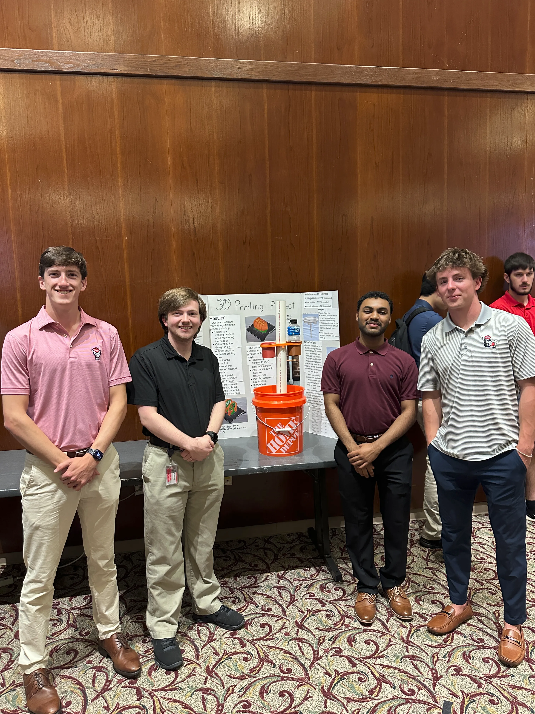
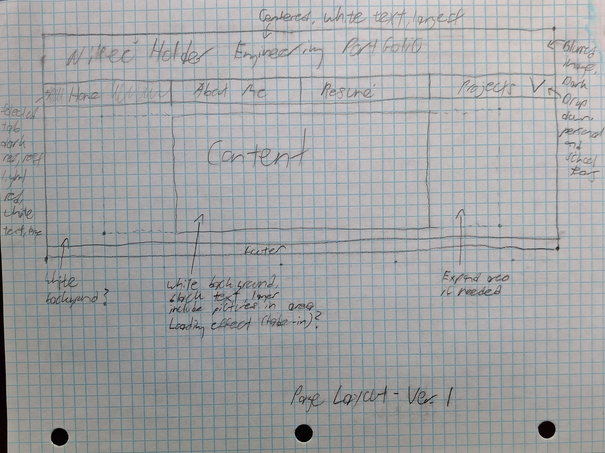

This is a project-heavy class where we will be learning the basics of embedded systems and applying previously learned C concepts in a tangible way. I am really looking forward to this class and will update this entry when more information is available.
This class is about digital signal processing and some of the math involved in the process, such as the impulse response and convolution. I will update this entry when more information is available.
Throughout this course, we focused on LC3 Processors and Assembly Language. While this is an educational language rather than an industry tool, I still thought it important to include in order to further demonstrate coding style and adaptiblity when it comes to a new coding language. Skills learned include:
This course places a huge emphasis on the C programming language. Concepts covered include C syntax, data structures, and C to Assembly.

This course focuses on logic gates and the functions we can make from them. We have 3 hardware projects lined up for the semester, and I will upload images and more detailed descriptions once we have started and completed these projects.
This is an ECE Math course that also teaches MATLAB. Having taken an intro course to MATLAB, I look forward to the labs in this class. More details and links to the labs will be added once labs are started and completed.

For this project, me and my group members conceptualized a use for our Engineering Grand Challenge, carbon sequestration, in factories and other industrial settings. This project taught me a lot about:
Throughout this course, we had to complete many complicated, partnered coding projects, which really depeened our understanding of the language. Due to the course syllabus for CSC 113, I am unable to post these projects online. However, should anyone be interested in viewing my abilities in MATLAB, you may contact me at my business email to view the projects.




Of all my freshman year projects, this had to be one of my favorites. I really enjoyed the physical, hands-on nature of this project, as me and my team got to create a physical prototype of our design. My team was named "Team J.A.N.K" (A funny acronym of me and my team members names, and some what an accurate description of our first prototype), and we were the second 3D Printing group for our class. As part of our parameters, we were tasked with creating an apparatus that could be used on vacation, and has two functions. After some brainstorming, we came up with our idea, an umbrella holder that doubles as a cup holder, so that future beach trips might be a little more convinient. We 3D Printed most of the project, with some of the connectors and the main shaft being made of different materials. We presented our project at Spring 2025 FEDD competition, where we got to see other projects and meet some engineers in the industry. Me and my team sharpened our communication, teamwork, and project management skills while learning foundational presentation skills. We also learned a lot about modeling and 3D Printing processes, which were a blast for me to brush up on.

I created this portfolio completely from scratch using HTML and CSS and posted it on GitHub Pages in order to showcase my projects. This project is only updated as needed, should something break or new information needs to be added to it. I learned/bolstered the following skills from this project:
This is project served as my intro into hardware specifics and applications. Changing parts and tuning for perfect prints familiarized me with the following concepts:
This project is a basic ESP-32 based smartwatch. I am currently at the very beginning of the project and am learning the following skills to aid me in my project:
In my free time (or when I have a problem I can solve), I like to work on all types of coding projects. All/most of those projects can be seen on my Github profile.